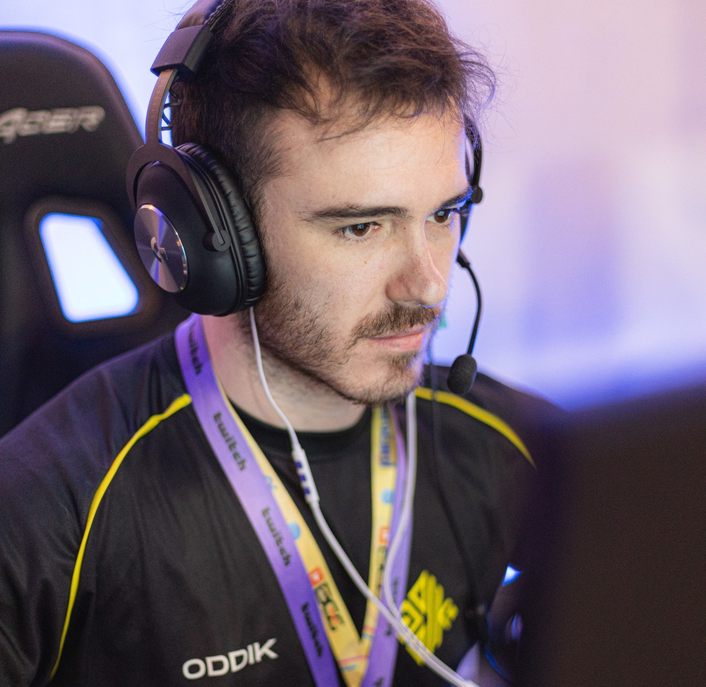

// FUNÇÃO
INICIADOR
// BIOGRAFIA
Nascido sob o eterno inverno das tundras russas, Sova rastreia, encontra e elimina inimigos com eficiência e precisão implacáveis. Seu arco personalizado e suas habilidades inigualáveis de reconhecimento garantem que nenhuma presa escape.

f0rsakenwOw / Rodrigo
f0rsakenwOw sem dúvidas pra mim, é o melhor main sova da atualidade, maluco calcula o pixel de um bomb pro outro e ainda consegue levar 2 ou mais inimigo nessa brincadeira. Ele joga muito, analisa as jogadas dos seus seguidores carinhosamente, fala com jeitinho quando o inscrito faz burrada, sempre sincero e honesto, merece muito os 100k de seguidores que conquistou na Twitch. Parabéns e todo sucesso pra ele.